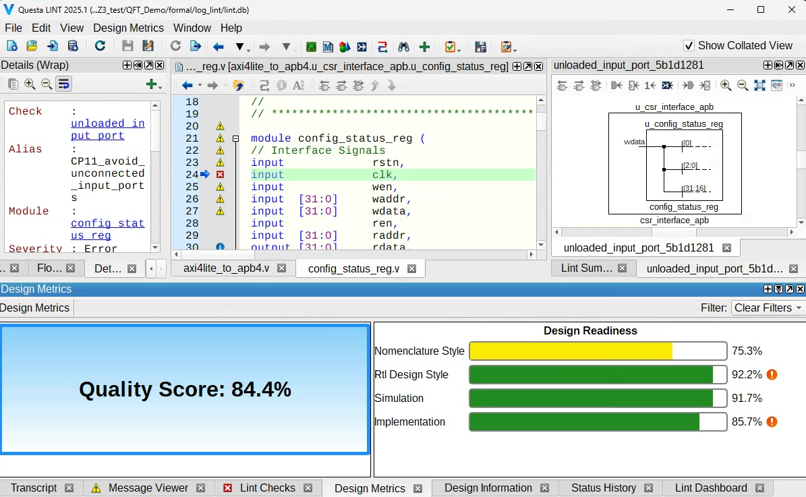
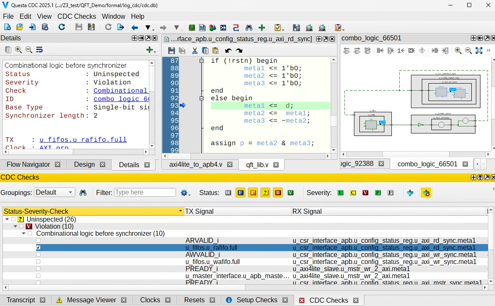
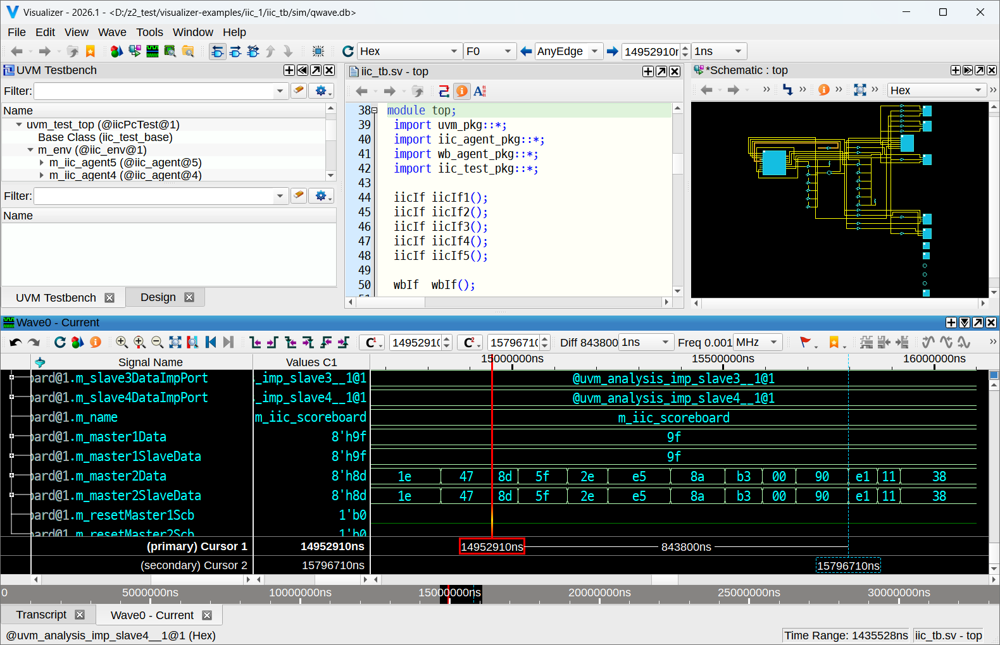

AutoSafeX
FPGA 설계·검증의 복잡함을 자동화로 혁신
Siemens EDA 기반 CI/CD DevOps 솔루션
정적/동적 검증 자동화
CI/CD DevOps
테스트벤치 자동 생성
REALITY CHECK
원전·방산 개발 환경의 특수성과 검증 현실
🔒 폐쇄적 개발 환경의 제약
🌐
외부망 차단 / 망분리
인터넷 접근 불가, 사내 격리망 운영으로 상용 EDA 툴 라이선스·업데이트 적용이 매우 제한적
🛡️
보안 규정 / 승인 절차
신규 소프트웨어 도입 시 보안심의·형상관리 승인이 수개월 소요, 검증 환경 구축 자체가 난관
👥
소규모 전담 인력
FPGA 설계·검증을 동시에 담당하는 소수 인원, 전문 검증 엔지니어 없이 설계자가 모두 겸임
→
현장의 현실
보드 실장 테스트
위주의 검증
위주의 검증
시뮬레이션·정적 분석 없이
하드웨어에서 직접 확인
하드웨어에서 직접 확인
→
⚠️ 잠재 리스크
지연
하드웨어 수령 후에야 버그 발견 — 재설계·재합성 사이클 반복으로 일정 수개월 지연
품질
코너 케이스·CDC 오류가 출하 후 발현 — 필드 장애·리콜 위험 상존
비용
FPGA 재프로그래밍이 가능하더라도 재검증·재시험 인력·시간 비용은 설계 단계의 수십 배
안전
원전·방산 특성상 논리 오류는 단순 제품 불량이 아닌 인명·안보와 직결되는 사안
CHALLENGE
FPGA 설계·검증, 방치하면 치명적
⚡
타이밍 위반 & 글리치
정적 분석 없이 진행된 설계 → 양산 후 타이밍 위반·글리치로
필드 장애 유발. 리콜 비용은 설계 비용의 수십 배.
🔀
CDC (Clock Domain Crossing) 오류
멀티 클럭 도메인 설계에서 CDC 검증 미비 → 메타스테이빌리티 문제 →
간헐적 오동작 발생, 디버깅에 수개월 소요.
🐛
수동 검증의 한계
수동 테스트벤치·파형 확인 의존 → 코너 케이스 누락 위험.
검증 커버리지 저하로 잠재 버그가 출하 후 발견.
⏱️
검증 일정 지연
체계적 자동화 부재 → 프로젝트 일정 2~3배 지연,
인력 부담 및 비용 증가 초래.
68%
FPGA 프로젝트 실패 원인 — 불충분한 검증에 기인
(출처: Wilson Research Group 설계 검증 연구)
(출처: Wilson Research Group 설계 검증 연구)
SOLUTION
Siemens EDA, 3단계 통합 검증
1
Questa Formal / Lint
정적 검증 (Static Analysis)
시뮬레이션 없이 RTL 코드의 잠재적 결함을 사전에 발견 및 평가
- 코딩 규칙 위반 자동 검출
- 리셋 도메인 분석
- 데드코드 / 도달 불가 상태 탐지
- Formal Property 검증

→
2
Questa CDC
CDC 검증 (Clock Domain Crossing)
멀티 클럭 도메인 간 데이터 전달의 안전성 보장
- Synchronizer 누락 검출
- Re-convergence 분석
- Glitch 감지
- 구조적/기능적 CDC 검증

→
3
QuestaSim
동적 검증 (Dynamic Simulation)
동작 시나리오 기반 기능 검증으로 요구사항 충족 여부 및 안정성 보장
- UVM 기반 검증 환경
- 코드 커버리지 분석
- 기능 커버리지 추적
- 파형 디버깅 & 분석

AUTOMATION SOLUTION
자동화로 검증 생산성을 극대화
⚙️
CI/CD DevOps 자동화
Siemens EDA 기반 파이프라인
코드 커밋 → 정적 검증 → 시뮬레이션 → 리포트 생성까지
전체 프로세스를 자동화 파이프라인으로 구축.
엔지니어는 설계에만 집중 가능.
AutoSafeX — Pipeline Dashboard
📊
🔍
📋
⚙️
✓ Commit
→
✓ Lint
→
✓ CDC
→
● Sim
→
○ Report
Pass Rate
94%
Coverage
87%
Builds
1,247
10:23:01 [PASS] lint_check — 0 violations
10:23:14 [PASS] cdc_analysis — 0 crossings unsafe
10:23:28 [RUN] questa_sim — tc_fifo_read_write
10:23:45 [INFO] coverage: line 87%, branch 82%
🔄 자동 회귀 테스트
📈 커버리지 트래킹
🔔 실시간 알림
📋 자동 리포트
🧪
테스트벤치 자동 생성
사용자 친화적 GUI 제공
직관적 GUI로 클럭, 리셋, Stimulus, Assertion
설정만으로 자동 생성. 반복 코딩 작업 제거,
검증 품질 향상.
AutoSafeX — TestBench Generator
⏰ Clock
🔁 Reset
📨 Stimulus
✅ Assertion
📦 Template
Clock Configuration
Frequency
100 MHz
Duty Cycle
50%
Phase
0°
Auto Reset
Waveform Preview
clk
rst_n
data
valid
// Auto-generated testbench
module tb_top;
reg clk = 0;
always #5 clk = ~clk;
module tb_top;
reg clk = 0;
always #5 clk = ~clk;
⏰ 클럭 생성기
🔁 리셋 시퀀서
📨 Stimulus 생성
✅ Assertion 생성
🖥️ 실시간 미리보기
💾 템플릿 저장
PILOT CASE
도입 검토 중인 파일럿 사례
⏳ 도입 검토 진행 중
한화시스템
방산 FPGA 설계팀 대상 웹 기반 검증 플랫폼 파일럿 실증 진행 중.
현재 긍정적으로 검토 중이며, 검증 효율화·협업 환경 구축에 대한
기대 효과를 공동으로 분석하고 있습니다.
- 웹 브라우저 기반 통합 검증 환경 (파일럿 시연 완료)
- 실시간 검증 상태 모니터링 대시보드
- 다수 엔지니어 동시 접속 & 협업
- 검증 결과 자동 아카이빙 & 리포팅

EXPECTED BENEFITS
AutoSafeX가 가져올 미래 가치
🚀
경쟁력 가속화
검증 자동화로 검증 사이클 단축. 반복 수작업 제거 및 설계 역량 집중 환경 제공.
수작업
장시간
자동화
단축
▼ 사이클 타임 단축
반복 수작업 → 자동 파이프라인
🛡️
품질 무결성
CI/CD 및 테스트벤치 자동화로 Human Error 원천 차단. 고신뢰성 원전·방산 규격 부합 품질 확보.
✓
Lint Check
PASS
✓
CDC Analysis
PASS
✓
Formal Verify
PASS
검증 커버리지
97%
💎
지식 자산 표준화
검증 노하우의 공통 라이브러리 및 템플릿 자산화. 신규 인력 투입 시 즉각 생산성 유지.
🔗
완성형 환경 자립
폐쇄 환경 최적화 구축형 플랫폼. 외부 기술 의존 탈피 및 독자적 검증 생태계 구축.
"단순한 도구 도입을 넘어, 기술 자립과 신뢰의 표준 정립"